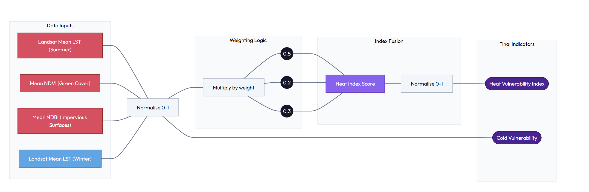
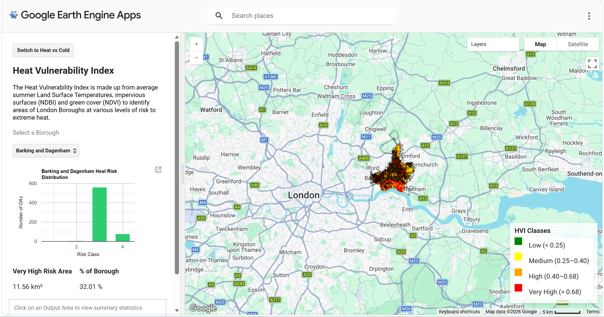
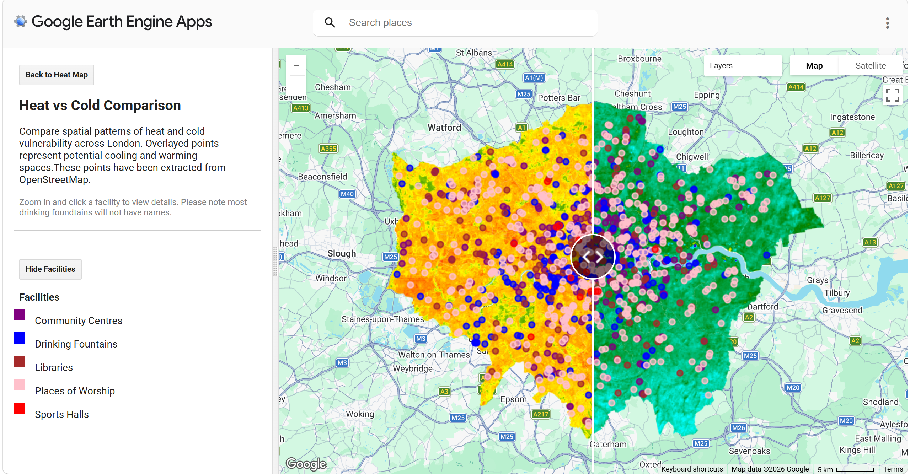

Mapping London’s Thermal Vulnerability
Heat, Cold, and the Shelter Gap — A Spatial Equity Analysis
Project Summary
This project aims to identify spatial inequalities in thermal exposure across London by mapping areas that experience the highest temperatures during heat events and the lowest temperatures during cold periods. These environmental patterns are analysed alongside the distribution of publicly accessible shelters (cool spaces and warm spaces) and demographic vulnerability indicators derived from census data.
By integrating climate, accessibility, and socio-demographic data, the project highlights where vulnerable populations may be disproportionately exposed to extreme temperatures and where gaps in shelter provision exist.
Problem Statement
Extreme heat and cold events are increasing in frequency and intensity due to climate change, posing significant risks to public health, particularly for vulnerable populations such as the elderly, young children, and those with underlying health conditions.
While local authorities and organisations provide “cool spaces” and “warm spaces” to mitigate these risks, there is currently no clear, London-wide understanding of:
Where the most thermally extreme areas are
How accessible shelters are from these areas
Whether vulnerable populations are adequately served
This lack of integrated spatial insight limits the ability of policymakers and local authorities to target interventions effectively, potentially leaving high-risk communities under-served.
End Users
Council officers can use this heat‑mapping tool to pinpoint where land surface temperatures, heat exposure, and vulnerable populations are most concentrated, enabling targeted action in departments including planning, housing, transport, and public health.
This interactive map application will guide climate‑resilience funding bids, inform planning decisions on overheating and identify homes and infrastructure at risk.
The Application can also support external organisations operating at a London-wide level such as the GLA to inform their heat risk and resilience strategies.
- Sustainability and Planning - Climate‑resilience funding bids and prioritises adaptation projects (trees, shading, cool roofs, green infrastructure). Informs planning decisions on overheating risk and ensures compliance with London Plan policies.
- Building Control & Housing Teams - Highlights homes at risk of indoor overheating to target retrofit programmes.
- Public Health & Adult Social Care - Locates heat‑sensitive populations to guide heatwave response, cooling centres.
Data
| Category | Dataset | Calculation / Use | Description | Source |
|---|---|---|---|---|
| GEE — Landsat 8 | Land Surface Temperature (LST) | Summer (Jun–Aug) and Winter (Dec–Feb) median composites, 2013–2023. ST_B10 converted from Kelvin to Celsius using Collection 2 scale factors. | Thermal infrared data at 30 m resolution r epresenting the radiometric temperature of the land surface. | L ink |
| GEE — Landsat 8 | NDVI | Normalised Difference Vegetation Index from SR_B5 (NIR) and SR_B4 (Red). Low NDVI, high urban heat exposure. | Proxy for vegetation density; inversely related to UHI intensity. | Link |
| GEE — Landsat 8 | NDBI | Normalised Difference Built-up Index from SR_B6 and SR_B5 (NIR). High NDBI, greater built-up surface cover. | Proxy for impervious surface extent; positively correlated with heat retention. | Link |
| ONS Census 2021 | Age structure per Output Area | Percentage of population aged 0–19 and 65+ per OA, used as demographic vulnerability indicators. | 2021 Census age -by-five-ye ar-age-band data for all London Output Areas (~25,000 OAs). | Link |
| OpenStreetMap (OSM) | Community Facilities. | Calculation/Use: Extracted points representing publicly accessible buildings (e.g. libraries, community centres, leisure centres, places of worship). Used to identify nearest facilities to the more affected areas. | Open, crowd-sourced geospatial dataset providing comprehensive coverage of civic and community infrastructure. Acts as a proxy dataset for potential shelter locations where official registers are incomplete or unavailable. | Link |
| Boundaries | London Boroughs & Output Areas | Used as the geographic framework for analysis aggregation and user interface queries. | Official boundary files for the 32 London Boroughs and ~25,000 Output Areas from the ONS Open Geography Portal. | Link |
Methodology
Heat Vulnerability Index
To build our Heat Vulnerability Index (HVI) , we drew on research from Krenz & Amann (2025) looking at the Urban Heat Island effect and it’s interaction with socio-demographic disparities across London. We adopted the same age group definitions to represent vulnerability, enabling our application to display the proportion of older and younger populations at a granular Output Area (OA) level.
We also built on Roberts et.al (2025), who developed a PCA-based HVI for Hackney at OA level, focusing on the 2022 heatwave. Extending this approach we applied an OA level classification across all London boroughs.
Our HVI is derived from Landsat 8 data. We calculated:
10-year mean summer Land Surface Temperatures (LST)
Impervious surfaces using the Normalised Difference Built-up Index (NDBI)
Green cover using the Normalised Difference Vegetation Index (NDVI)
These variables were normalised, weighted and combined to produce the HVI. The final raster was resampled to 50m x 50m to balance spatial granularity and application performance.

We then monitored our histogram distribution of this raster dataset and classified it into 4 risk classes:
0-0.25 low risk
0.25-0.40 medium risk
0.4-0.68 high risk
0.68-1 very high risk
Following this the data is combined with the OA data set to calculate a mean score per Output Area, and joined with ONS age data to create the precomputed assets for the final application.
//Add london boundaries and ONS DATA
var london = ee.FeatureCollection('projects/casa0025-spatial-applications/assets/dissolved_oas');
var london_boroughs = ee.FeatureCollection('projects/casa0025-spatial-applications/assets/london_boroughs');
var london_oas = ee.FeatureCollection('projects/casa0025-spatial-applications/assets/london_oas_corrected');
var ons_vulnerable_age = ee.FeatureCollection('projects/casa0025-spatial-applications/assets/ons_vulnerable_age');
//Set map center
Map.setCenter(-0.2687, 51.5796, 5);
Map.addLayer(london, {}, 'London');
//Define dates
var start = '2013-01-01';
var end = '2023-12-31';
//////////////////////// FUNCTIONS ///////////////////////////
//Create functions for the whole script to minimise repetition
//Scale Landsat
function applyScaleFactors(image) {
return image
.addBands(image.select('SR_B.').multiply(0.0000275).add(-0.2), null, true)
.addBands(image.select('ST_B.*').multiply(0.00341802).add(149.0), null, true);
}
//Min-max stats
function getMinMax(image, band) {
var stats = image.reduceRegion({
reducer: ee.Reducer.minMax(),
geometry: london,
scale: 250,
maxPixels: 1e13
});
return {
min: ee.Number(stats.get(band + '_min')),
max: ee.Number(stats.get(band + '_max'))
};
}
//Normalize
function normalizeImage(image, band) {
var stats = getMinMax(image, band);
return image.subtract(stats.min)
.divide(stats.max.subtract(stats.min))
.rename(band + '_norm');
}
//Creating index (NDVI/NDBI)
function addIndex(collection, bands, name) {
return collection.map(function(img) {
return img.normalizedDifference(bands)
.rename(name)
.copyProperties(img, ['system:time_start']);
});
}
//////////////// SUMMER DATA///////////////
//Load landsat
var landsat = ee.ImageCollection('LANDSAT/LC08/C02/T1_L2')
.filterDate(start, end)
.filter(ee.Filter.calendarRange(6, 8, 'month'))
.filterBounds(london)
.filter(ee.Filter.lt('CLOUD_COVER', 1))
.map(applyScaleFactors);
//Get land surface temperatures convert to Celcius
var lst = landsat.select('ST_B10')
.map(function(img) { return img.subtract(273.15); });
var lst_mean = lst.mean().clip(london);
var lst_norm = normalizeImage(lst_mean, 'ST_B10');
//NDVI
var ndvi_mean = addIndex(landsat, ['SR_B5','SR_B4'], 'NDVI')
.mean().clip(london);
var ndvi_norm = normalizeImage(ndvi_mean, 'NDVI');
//NDBI
var ndbi_mean = addIndex(landsat, ['SR_B6','SR_B5'], 'NDBI')
.mean().clip(london);
var ndbi_norm = normalizeImage(ndbi_mean, 'NDBI');
//Resample all layers
var scale = 50;
var crs = 'EPSG:4326';
var lst_r = lst_norm.reproject({crs: crs, scale: scale});
var ndvi_r = ndvi_norm.reproject({crs: crs, scale: scale});
var ndbi_r = ndbi_norm.reproject({crs: crs, scale: scale});
///////////////// HEAT INDEX //////////////////////
//Build Heat Index
var heatIndex = lst_r.multiply(0.5)
.add(ndbi_r.multiply(0.3))
.add(ee.Image(1).subtract(ndvi_r).multiply(0.2))
.rename('heat_index');
//Normalize final
var heat_norm = normalizeImage(heatIndex, 'heat_index');
//Add visual map to check
Map.addLayer(heat_norm, {
min: 0, max: 1,
palette: ['green','yellow','orange','red']
}, 'Heat Vulnerability Index');
//Check data distribution with histogram
print(ui.Chart.image.histogram({
image: heat_norm,
region: london,
scale: 30,
maxPixels: 1e10
}).setOptions({
title: 'HVI Histogram',
hAxis: {title: '0–1'},
vAxis: {title: 'Frequency'}
}));
/////////////////// HEAT RISK CLASSES LAYER //////////////
//Calculate heat classes based on histogram
var heatZones = heat_norm
.where(heat_norm.lt(0.25), 1)
.where(heat_norm.gte(0.25).and(heat_norm.lt(0.4)), 2)
.where(heat_norm.gte(0.4).and(heat_norm.lt(0.68)), 3)
.where(heat_norm.gte(0.68), 4)
.rename('heat_zone')
.clip(london);
//Add to map to check
Map.addLayer(heatZones, {
min:1, max:4,
palette:['green','yellow','orange','red']
}, 'Heat Classes');
////////////////// EXPORTS /////////////////////////
//Export data
Export.image.toAsset({
image: heat_norm,
description: 'HVI_continuous',
assetId: 'users/piezajulia/10_year_HVI_continuous',
region: london.geometry(),
scale: 50,
maxPixels: 1e13
});
Export.image.toAsset({
image: heatZones.toInt(),
description: 'HVI_classes',
assetId: 'users/piezajulia/10_year_HVI_classes',
region: london.geometry(),
scale: 50,
maxPixels: 1e13
});
///////////////////// OUTPUT AREAS //////////////////
//Create OA variable, simplify geometric boundaries for speed, prep join id column
var oa = london_oas.select(['OA21CD'])
.map(function(f) {
return f.simplify(20)
.set('join_id', ee.String(f.get('OA21CD')).trim().toUpperCase());
});
//Calculate mean HVI per OA
var oa_hvi = heat_norm.reduceRegions({
collection: oa,
reducer: ee.Reducer.mean(),
scale: 50
}).map(function(f){
return f.set('HVI_mean', f.get('mean'))
.select(['OA21CD','HVI_mean']);
});
////////////////// ONS AND OA DATA //////////////////////
// Clean ONS table (handle BOM due to the CSV being UTF8)
var onsClean = ons_vulnerable_age.map(function(f) {
var id = ee.Algorithms.If(
f.get('OA21CD'),
f.get('OA21CD'),
f.get('OA21CD')
);
return f.set({
join_id: ee.String(id).trim().toUpperCase(),
percentage_old: ee.Number.parse(f.get('percentage_old')),
percentage_young: ee.Number.parse(f.get('percentage_young'))
});
});
//Clean OA table
var oaClean = oa_hvi.map(function(f) {
return f.set({
join_id: ee.String(f.get('OA21CD'))
.trim()
.toUpperCase()
});
});
//Join
var joined = ee.Join.inner().apply(
oaClean,
onsClean,
ee.Filter.equals({
leftField: 'join_id',
rightField: 'join_id'
})
);
//Merge properties
var oa_joined = joined.map(function(f) {
var oaFeat = ee.Feature(f.get('primary'));
var onsFeat = ee.Feature(f.get('secondary'));
return oaFeat.copyProperties(onsFeat);
});
//Final clean table with relevant columns
var oa_final = oa_joined.map(function(f) {
return f.select([
'OA21CD',
'HVI_mean',
'percentage_old',
'percentage_young'
]);
});
//Export
Export.table.toAsset({
collection: oa_final,
description: '10_year_OA_HVI_ONS_CLEAN',
assetId: 'users/piezajulia/10_year_OA_HVI_ONS_CLEAN'
});Cold Risk
In addition to heat vulnerability, we considered exposure to cold temperatures, which is an increasing priority for London Local Authorities supporting winter ‘Warm Spaces’.
Rather than a composite index, we used mean winter LST as a proxy for cold risk. This provides a baseline view of colder areas, with scope for future enhancement through additional datasets such as building age, energy efficiency, and fuel poverty.
Our aim is to help identify areas where heat and cold vulenrabilities overlap, supporting more targeted placement of both cooling and warming infrastructure.
////////////////////// WINTER DATA/////////////////////////
//Landsat winter temperatures - December to Feb
var winter = ee.ImageCollection('LANDSAT/LC08/C02/T1_L2')
.filterDate(start, end)
.filter(ee.Filter.or(
ee.Filter.calendarRange(12,12,'month'),
ee.Filter.calendarRange(1,2,'month')))
.filterBounds(london)
.filter(ee.Filter.lt('CLOUD_COVER', 25))
.map(applyScaleFactors);
//LST Winter temperatures Celcius
var lst_winter = winter.select('ST_B10')
.map(function(img){ return img.subtract(273.15); })
.mean()
.rename('LST')
.clip(london);
//Normalise
var cold_norm = normalizeImage(lst_winter, 'LST')
.multiply(-1).add(1)
.rename('cold_index');
//Add layer to check
Map.addLayer(cold_norm, {
min:0, max:1,
palette:['yellow','green','cyan','blue','purple']
}, 'Cold Vulnerability');
//Export
Export.image.toAsset({
image: cold_norm,
description: 'Cold_Vulnerability',
assetId: 'users/piezajulia/10year_cold_vulnerability',
region: london.geometry(),
scale: 50,
maxPixels: 1e13
});Interface
The application provides a simple interface where users can select a London borough and view summary statistics for both heat and cold vulnerability.
Heat Vulnerability Index (View)
We focus on granular insights at the OA level (typically 40-250 households, or 100-625 residents). For each borough, a chart shows the distribution of heat risk across OAs, based on mean HVI scores.

Heat vs Cold (View)
This view allows users to compare heat and cold risk using a slider between maps. We also incorporate potential cool and warm spaces sourced from OpenStreetMap, enabling policymakers, planners and third-sector organisations to assess existing infrastructure that could help mitigate risk.

The Application
Key capabilities
Borough summary statistics
We estimate the area (km2) of each borough classified as very high risk and express this as a percentage of total area, helping identify where intervention may be most needed.
Toggle ‘Very High Risk’
This feature isolates Class 4 (Very High Risk) areas by hiding other layers, allowing users to focus on the highest-risk zones.
OA interactive view and summary
Users can click on an OA to view key statistics, including mean HVI and the proportion of younger and older populations, supporting detailed local risk assessment.
::: column page
:::
How It Works
To ensure performance and interactivity, the application relies on precomputed layers that are loaded into the interface.
Precomputed layers
Heat Vulnerability Index raster
HVI Classification layer
Mean HVI per OA
Cold Vulnerability Raster
ONS Age vulnerability data (Census 2021)
These layers are imported into the interface script which is presented below. This script builds our content panel and our two view pages for HVI and Heat v Cold comparison with our OpenStreetMap facilities data.
The application interface is divided into a two page view, our Heat Vulnerability Index page and our Heat v Cold Comparison page which allows users to investigate cool and warm facilities across London.
//Import boundaries:
var london_boroughs = ee.FeatureCollection('projects/casa0025-spatial-applications/assets/london_boroughs');
var london = ee.FeatureCollection('projects/casa0025-spatial-applications/assets/dissolved_oas');
//Import facilities:
var community_centres = ee.FeatureCollection('projects/casa0025-spatial-applications/assets/community_centres');
var libraries = ee.FeatureCollection('projects/casa0025-spatial-applications/assets/libraries');
var drinking_fountains = ee.FeatureCollection('projects/casa0025-spatial-applications/assets/drinking_fountains');
var places_of_worship = ee.FeatureCollection('projects/casa0025-spatial-applications/assets/places_of_worship')
var sports_halls = ee.FeatureCollection('projects/casa0025-spatial-applications/assets/sports_halls');
//Import HVI data:
var hvi = ee.Image('users/piezajulia/10_year_HVI_continuous');
var hvi_classes = ee.Image('users/piezajulia/10_year_HVI_classes');
var oa_data = ee.FeatureCollection('users/piezajulia/10_year_OA_HVI_ONS_CLEAN');
var oa_hvi = ee.FeatureCollection('users/piezajulia/10_year_oa_hvi_mean');
//Import cold risk data:
var cold_index = ee.Image('users/piezajulia/10year_cold_vulnerability');
//Import census data:
var ons_vulnerable_age = ee.FeatureCollection('projects/casa0025-spatial-applications/assets/ons_vulnerable_age');
////////// Initial setup of the application //////////////////
ui.root.clear();
//Create Panels
var mapPanel = ui.Panel({style: {stretch: 'both'}});
var sidePanel = ui.Panel({
style: {width: '30%', padding: '15px'}
});
//Define split panel for content
var app = ui.SplitPanel({
firstPanel: sidePanel,
secondPanel: mapPanel,
orientation: 'horizontal',
wipe: false
});
ui.root.add(app);
//Create main map and center on London
var map = ui.Map();
map.setCenter(-0.2687, 51.5796, 10);
//Set default page as Heat
var currentMode = 'heat';
var showVHI = false;
var currentBorough = null;
var showPoints = true;
//Create toggle button between two pages of the application
var toggleButton = ui.Button({
label: 'Switch to Heat vs Cold',
onClick: function () {
if (currentMode === 'heat') {
buildComparisonMap();
toggleButton.setLabel('Back to Heat Map');
currentMode = 'compare';
} else {
buildHeatMap();
toggleButton.setLabel('Switch to Heat vs Cold');
currentMode = 'heat';
}
}
});
//OA classification based on heat vulnerability index
var oa_classified = oa_data.map(function(f) {
var hviVal = ee.Number(f.get('HVI_mean'));
var zone = ee.Number(
ee.Algorithms.If(hviVal.lt(0.25),1,
ee.Algorithms.If(hviVal.lt(0.4),2,
ee.Algorithms.If(hviVal.lt(0.68),3,4)))
);
return f.set('heat_class', zone);
});
/////// First Page ///////////
//Create Heat Vulnerability Index Page
function buildHeatMap() {
mapPanel.clear();
mapPanel.add(map);
map.layers().reset();
var legend = ui.Panel({
style: {
position: 'bottom-right',
padding: '8px 10px',
backgroundColor: 'rgba(255,255,255,0.8)'}
});
legend.add(ui.Label({
value: 'HVI Classes',
style: {fontWeight: 'bold', margin: '0 0 6px 0'}
}));
var colors = ['green', 'yellow', 'orange', 'red'];
var names = [
'Low (< 0.25)',
'Medium (0.25–0.40)',
'High (0.40–0.68)',
'Very High (> 0.68)'
];
for (var i = 0; i < 4; i++) {
var colorBox = ui.Label({
style: {
backgroundColor: colors[i],
padding: '8px',
margin: '0 6px 0 0'
}
});
var description = ui.Label(names[i]);
var row = ui.Panel({
widgets: [colorBox, description],
layout: ui.Panel.Layout.Flow('horizontal')
});
legend.add(row);
}
//Clear widget before adding legend
map.widgets().reset();
//Add legend to map
map.add(legend);
//Add side panel content
sidePanel.clear();
sidePanel.add(toggleButton);
sidePanel.add(ui.Label('Heat Vulnerability Index', {
fontWeight: 'bold',
fontSize: '20px'
}));
sidePanel.add(ui.Label('The Heat Vulnerability Index is made up from average summer Land Surface Temperatures, impervious surfaces (NDBI) and green cover (NDVI) to identify areas of London Boroughs at various levels of risk to extreme heat.', {
fontSize: '13px',
color: 'black',
}));
sidePanel.add(ui.Label('Select a Borough', {
fontSize: '13px',
color: 'grey',
}));
//Dropdown
var dropdown = ui.Select({placeholder: 'Select borough'});
sidePanel.add(dropdown);
//Containers for chart and area calculations
var chartContainer = ui.Panel();
var areaContainer = ui.Panel({
layout: ui.Panel.Layout.flow('horizontal')
});
sidePanel.add(chartContainer);
sidePanel.add(areaContainer);
//Create OA info panel (inside content panel)
var oaInfoPanel = ui.Panel({
style: {
margin: '10px 0',
padding: '10px',
border: '1px solid #ccc'
}
});
sidePanel.add(oaInfoPanel);
oaInfoPanel.add(ui.Label(
'Click on an Output Area to view summary statistics',
{
color: 'grey',
fontSize: '12px',
margin: '0 0 8px 0'
}
));
//Prevent multiple handlers stacking when rebuilding map
map.unlisten('click');
map.onClick(function(coords) {
var point = ee.Geometry.Point([coords.lon, coords.lat]);
var clickedOA = oa_classified.filterBounds(point).first();
clickedOA.evaluate(function(f) {
oaInfoPanel.clear();
if (!f) {
oaInfoPanel.add(ui.Label('No Output Area found'));
return;
}
oaInfoPanel.add(ui.Label('Output Area Info', {
fontWeight: 'bold',
fontSize: '14px'
}));
oaInfoPanel.add(ui.Label('OA Code: ' + f.properties.OA21CD));
oaInfoPanel.add(ui.Label('Mean HVI: ' + Number(f.properties.HVI_mean).toFixed(2)));
oaInfoPanel.add(ui.Label('% Older: ' + Number(f.properties.percentage_old).toFixed(2)));
oaInfoPanel.add(ui.Label('% Younger: ' + Number(f.properties.percentage_young).toFixed(2)));
});
});
//Create button to show very high risk areas (Class 4 of HVI)
var vhiToggle = ui.Button({
label: 'Show Very High Risk Only',
onClick: function() {
showVHI = !showVHI;
vhiToggle.setLabel(
showVHI ? 'Show Full HVI' : 'Show Very High Risk Only'
);
if (currentBorough) {
updateBorough(currentBorough);
}
}
});
sidePanel.add(vhiToggle);
//Dropdown for boroughs to update charts
dropdown.onChange(function(name) {
currentBorough = name;
updateBorough(name);
showChart(name);
updateVeryHighArea(name);
});
london_boroughs.aggregate_array('NAME').sort().evaluate(function(list){
dropdown.items().reset(list);
dropdown.setValue(list[0], true);
});
//Update boroughs function to show layers in the application
//This enables switching between HVI and Very High Risk views
function updateBorough(name) {
currentBorough = name;
//london borough geometries to filter with map
var boroughGeom = london_boroughs
.filter(ee.Filter.eq('NAME', name))
.geometry();
map.centerObject(boroughGeom, 10);
map.layers().reset();
var oaFiltered = oa_classified.filterBounds(boroughGeom);
//style output areas
var oaStyled = oaFiltered.map(function(f) {
return f.set({
style: {
color: 'black',
width: 0.5,
fillColor: '00000000'
}
});
});
if (showVHI) {
//show very high risk area else show london borough HVI
var class4 = hvi_classes
.eq(4)
.selfMask()
.clip(boroughGeom);
map.addLayer(class4, {palette: ['red']}, 'Very High Risk');
} else {
map.addLayer(hvi.clip(boroughGeom), {
min: 0,
max: 1,
palette: ['green','yellow','orange','red']
}, 'HVI');
map.addLayer(hvi_classes.clip(boroughGeom), {
min: 1,
max: 4,
palette: ['green','yellow','orange','red']
}, 'HVI Classes');
map.addLayer(
oaStyled.style({styleProperty: 'style'}),
{},
'OA Boundaries'
);
}
showChart(name);
updateVeryHighArea(name);
}
//Chart functions, count of classes
function getClassCounts(name) {
var borough = london_boroughs
.filter(ee.Filter.eq('NAME', name))
.geometry();
var data = oa_classified.filterBounds(borough);
var classes = ee.List.sequence(1, 4);
var counts = classes.map(function(i) {
i = ee.Number(i);
var count = data.filter(ee.Filter.eq('heat_class', i)).size();
return ee.Feature(null, {class: i, count: count});
});
return ee.FeatureCollection(counts);
}
//Chart function, gets class chart to display
function showChart(name) {
var fc = getClassCounts(name);
var chart = ui.Chart.feature.byFeature(fc, 'class', ['count'])
.setChartType('ColumnChart')
.setOptions({
title: name + ' Heat Risk Distribution',
legend: {position: 'none'},
colors: ['#2ECC71','#F1C40F','#E67E22','#C0392B'],
hAxis: {title: 'Risk Class'},
vAxis: {title: 'Number of OAs'}
});
chartContainer.clear();
chartContainer.add(chart);
}
//Calculating very high area summary statistics
function updateVeryHighArea(name) {
var boroughGeom = london_boroughs
.filter(ee.Filter.eq('NAME', name))
.geometry();
//Mask Class 4 very high risk areas
var mask = hvi_classes.eq(4).selfMask().clip(boroughGeom);
//update the image on the map
var areaImage = ee.Image.pixelArea().updateMask(mask);
//calculate area statistics function
var areaStats = areaImage.reduceRegion({
reducer: ee.Reducer.sum(),
geometry: boroughGeom,
scale: 100,
maxPixels: 1e13
});
//calculate m2 and km2
var area_m2 = ee.Number(areaStats.get('area'));
var area_km2 = area_m2.divide(1e6);
//calculate total area
var totalArea = ee.Image.pixelArea().reduceRegion({
reducer: ee.Reducer.sum(),
geometry: boroughGeom,
scale: 100,
maxPixels: 1e13
});
var total_m2 = ee.Number(totalArea.get('area'));
var percent = area_m2.divide(total_m2).multiply(100);
area_km2.evaluate(function(a) {
percent.evaluate(function(p) {
areaContainer.clear();
//add total area to view in the content panel
areaContainer.add(ui.Panel([
ui.Label('Very High Risk Area', {fontWeight:'bold'}),
ui.Label((a || 0).toFixed(2) + ' km²')
]));
areaContainer.add(ui.Panel([
ui.Label('% of Borough', {fontWeight:'bold'}),
ui.Label((p || 0).toFixed(2) + ' %')
]));
});
});
}
}
///////// SECOND PAGE /////////
//Creating Heat v Cold comparison page with potential cool and warm spaces
function buildComparisonMap() {
mapPanel.clear();
//Create 2 maps
var leftMap = ui.Map();
var rightMap = ui.Map();
var londonGeom = london_boroughs.geometry();
//Center on London
leftMap.centerObject(londonGeom, 10);
rightMap.centerObject(londonGeom, 10);
//Link maps
ui.Map.Linker([leftMap, rightMap]);
//Add heat and cold maps
leftMap.addLayer(hvi.clip(londonGeom), {
min: 0,
max: 1,
palette: ['green','yellow','orange','red']
}, 'Heat Vulnerability');
rightMap.addLayer(cold_index.clip(londonGeom), {
min: 0,
max: 1,
palette: ['yellow','green','cyan','blue','purple']
}, 'Cold Vulnerability');
//Style point data for imported layers for cool and warm spaces
var communityStyled = community_centres.style({
color: 'purple',
pointSize: 4
});
var fountainsStyled = drinking_fountains.style({
color: 'blue',
pointSize: 4
});
var librariesStyled = libraries.style({
color: 'brown',
pointSize: 4
});
var worshipStyled = places_of_worship.style({
color: 'pink',
pointSize: 4
});
var sportsStyled = sports_halls.style({
color: 'red',
pointSize: 4
});
//Add points to both maps, allow them to be toggled on or off
if (showPoints) {
//left map
leftMap.addLayer(communityStyled, {}, 'Community Centres');
leftMap.addLayer(fountainsStyled, {}, 'Drinking Fountains');
leftMap.addLayer(librariesStyled, {}, 'Libraries');
leftMap.addLayer(worshipStyled, {}, 'Places of Worship');
leftMap.addLayer(sportsStyled, {}, 'Sports Halls');
//right map
rightMap.addLayer(communityStyled, {}, 'Community Centres');
rightMap.addLayer(fountainsStyled, {}, 'Drinking Fountains');
rightMap.addLayer(librariesStyled, {}, 'Libraries');
rightMap.addLayer(worshipStyled, {}, 'Places of Worship');
rightMap.addLayer(sportsStyled, {}, 'Sports Halls');
}
//Split panel code with wipe function
var split = ui.SplitPanel({
firstPanel: leftMap,
secondPanel: rightMap,
orientation: 'horizontal',
wipe: true
});
mapPanel.add(split);
//Create side panel for content
sidePanel.clear();
sidePanel.add(toggleButton);
//add labels and text
sidePanel.add(ui.Label('Heat vs Cold Comparison', {
fontSize: '20px',
fontWeight: 'bold'
}));
sidePanel.add(ui.Label(
'Compare spatial patterns of heat and cold vulnerability across London. ' +
'Overlayed points represent potential cooling and warming spaces.'+
'These points have been extracted from OpenStreetMap.'
));
//Info panel for facility names names
var infoPanel = ui.Panel({
style: {
margin: '10px 0',
padding: '10px',
border: '1px solid #ccc'
}
});
sidePanel.add(ui.Label('Zoom in and click a facility to view details. Please note most drinking foundtains will not have names.', {
fontSize: '12px',
color: 'grey'
}));
sidePanel.add(infoPanel);
//Point toggle button to show and hide facilities
var togglePointsBtn = ui.Button({
label: showPoints ? 'Hide Facilities' : 'Show Facilities',
onClick: function() {
showPoints = !showPoints;
buildComparisonMap();
}
});
sidePanel.add(togglePointsBtn);
//Set up click function for facility names
leftMap.unlisten('click');
rightMap.unlisten('click');
function handleClick(coords) {
var point = ee.Geometry.Point([coords.lon, coords.lat]);
var buffer = point.buffer(50);
function getFeature(fc, propertyName) {
var feat = fc.filterBounds(buffer).first();
return ee.Algorithms.If(
feat,
ee.Feature(feat).get(propertyName),
null
);
}
//Click function to pull through name columns from shapefiles
var result = ee.Dictionary({
community: getFeature(community_centres, 'name'),
fountain: getFeature(drinking_fountains, 'name'),
library: getFeature(libraries, 'name'),
worship: getFeature(places_of_worship, 'name'),
sports: getFeature(sports_halls, 'name')
});
//add function for name if exists and no facility if not
result.evaluate(function(res) {
infoPanel.clear();
var found = false;
function addIfExists(label, value) {
if (value) {
infoPanel.add(ui.Label(label + ': ' + value));
found = true;
}
}
addIfExists('Community Centre', res.community);
addIfExists('Drinking Fountain', res.fountain);
addIfExists('Library', res.library);
addIfExists('Place of Worship', res.worship);
addIfExists('Sports Hall', res.sports);
if (!found) {
infoPanel.add(ui.Label('No facility at this location'));
}
});
}
//Apply to both maps maps
leftMap.onClick(handleClick);
rightMap.onClick(handleClick);
//Create a legend for potential cool and warm spaces
sidePanel.add(ui.Label('Facilities', {fontWeight: 'bold'}));
function legendRow(color, name) {
return ui.Panel([
ui.Label('', {
backgroundColor: color,
padding: '8px',
margin: '0 6px 4px 0'
}),
ui.Label(name)
], ui.Panel.Layout.Flow('horizontal'));
}
sidePanel.add(legendRow('purple', 'Community Centres'));
sidePanel.add(legendRow('blue', 'Drinking Fountains'));
sidePanel.add(legendRow('brown', 'Libraries'));
sidePanel.add(legendRow('pink', 'Places of Worship'));
sidePanel.add(legendRow('red', 'Sports Halls'));
}
//Build the application
buildHeatMap();3. Insights and Objectives
The application surfaces three main types of insight for decision-making:
- Risk prioritisation - identifying areas within boroughs at with the highest heat vulnerability risk scores so that scarce resources available to Local Authorities can be directed to places that need them them most. Additional data on young and old population percentages at OA level also helps to prioritise areas with vulnerable populations.
- Identifying potential sites - being able to view various types of community facilities enables policymakers and planners to investigate which sites are suitable to become cool or warm spaces. It also encourages more collaboration between existing organisations (places of worship, schools, libraries) to create more community provision.
- Seasonal comparison - the heat and cold maps do not always identify the same areas as highest priority. Some inner London boroughs with extreme summer UHI are well-served by cool spaces; some outer-borough estates face cold-risk with no warm banks nearby. The dual-season view allows this asymmetry to be interrogated directly.
Limitations and Opportunities
Spatial resolution - Landsat 8’s 30 m spatial resolution means that individual buildings, streets, and courtyards are not distinguishable. Sub-building variability in thermal exposure (e.g., a south-facing flat vs. a north-facing flat in the same block) is entirely invisible at this scale. Higher-resolution thermal data (e.g., Sentinel-3 SLSTR or commercial providers) could address this at increased cost.
Temporal aggregation - The multi-year summer median LST composite captures the average thermal character of an area but will under-represent the acute severity of individual extreme heat events, which is precisely when risk is highest. Future work could layer in extreme percentile composites (e.g., 95th percentile LST across the period) in addition to the median.
Census data lag - The 2021 Census demographic data is now five years old. Areas undergoing rapid demographic change (e.g., gentrification-driven age profile shifts) will not be accurately represented.
Shelter data completeness - The OpenStreetMap dataset represents a broad but indirect proxy for potential shelter locations. While it provides strong coverage of community infrastructure, it does not confirm whether a site is actively operating as a warm or cool space. Conversely, official datasets such as GLA Cool Spaces and Warm Welcome registers are more accurate but the data is not available for downloading and can be incomplete and inconsistently maintained. Combining OSM with official registers allows for a hybrid dataset that balances coverage and accuracy. Further validation through local authority collaboration could significantly improve reliability.
Data maintenance and updates - The current dataset represents a static snapshot in time. OpenStreetMap data is continuously updated, but manual extraction introduces the risk of data becoming outdated. This process could be automated using OSM APIs (e.g., Overpass API) or Scheduled data pipelines (e.g., FME, Python scripts). This would enable the application to have regular refreshes of facility data and near real-time updates to shelter accessibility analysis.
References
Cutter, S.L., Boruff, B.J. and Shirley, W.L. (2003). Social vulnerability to environmental hazards. Social Science Quarterly, 84(2), pp.242–261.
Greater London Authority (2024). Properties Vulnerable to Heat Impacts in London. London: GLA. Available at: https://www.london.gov.uk/sites/default/files/2024-01/24-01-16%20GLA%20Properties%20Vulnerable%20to%20Heat%20Impacts%20in%20London.pdf [Accessed April 2026].
Krenz, K., & Amann, L. (2025). Urban heat island effect: examining spatial patterns of socio-demographic inequalities in Greater London. Cities & Health, 9(5), 901–924. https://doi.org/10.1080/23748834.2025.2489854
King’s College London (2026). Londoners’ Experiences of Heat and Priorities for Action. London: KCL. Available at: https://www.kcl.ac.uk/sfg/assets/londoners-experiences-of-heat-and-priorities-for-action.pdf [Accessed April 2026].
Lambeth Climate Partnership (2025). Cooling Fiveways Project. Available at: https://lambethclimatepartnership.org/live-project/cooling-fiveways [Accessed April 2026].
Mushore, T.D., Mutanga, O. and Odindi, J. (2017). Assessing the potential of in-situ hyperspectral remote sensing to classify and predict land surface temperature (LST) in an urban environment. ISPRS Journal of Photogrammetry and Remote Sensing, 125, pp.58–68.
Office for National Statistics (2022). Excess Winter Mortality in England and Wales: 2021 to 2022. Newport: ONS.
Roberts, E., Sun, T. and Pelling, M. (2025) ‘Compound urban heat risk revealed by co-location of social vulnerability and elevated temperatures in London, UK: A spatial analysis’, Sustainable Cities and Society, 132, p. 106756. Available at: https://doi.org/10.1016/j.scs.2025.106756.
Sismanidis, P., Keramitsoglou, I. and Kiranoudis, C.T. (2017). Mapping the spatiotemporal dynamics of Europe’s land surface temperatures. ISPRS Journal of Photogrammetry and Remote Sensing, 130, pp.137–146.
Tan, J., Zheng, Y., Tang, X., Guo, C., Li, L., Song, G., Zhen, X., Yuan, D., Kalkstein, A.J., Li, F. and Chen, H. (2010). The urban heat island and its impact on heat waves and human health in Shanghai. International Journal of Biometeorology, 54, pp.75–84.
UK Health Security Agency (2022). Heat-Mortality Monitoring Report: Summer 2022. London: UKHSA.
Zhu, Z. and Woodcock, C.E. (2012). Object-based cloud and cloud shadow detection in Landsat imagery. Remote Sensing of Environment, 118, pp.83–94.